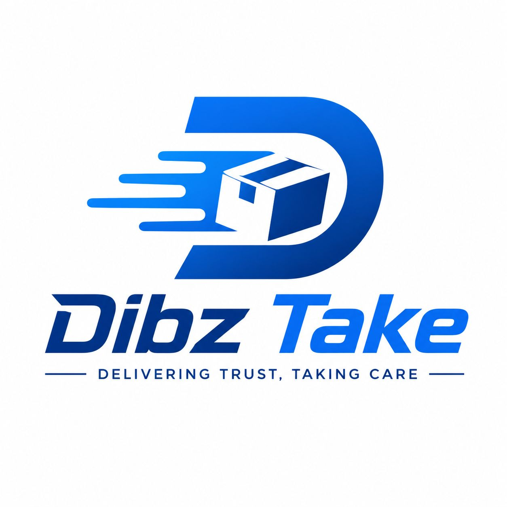

Welcome to DibzTake Couriers — your trusted delivery partner in Botswana and beyond. We are a fast-growing courier company dedicated to making parcel delivery simple, affordable, and stress-free for everyone.
Founded with a passion for logistics and customer service, DibzTake was built on one simple belief — that every parcel matters. Whether you are sending a small document across town or shipping goods internationally, we treat every delivery with the same level of care and urgency.
Our mission is to connect people and businesses through fast, reliable, and affordable courier services. We aim to be the most trusted delivery brand in Botswana by putting our customers first in everything we do.
Unlike large courier corporations, DibzTake is local — we understand Botswana, we know our routes, and we are always just a call or click away. Our team is trained, professional, and committed to getting your parcel there safely and on time.
Every parcel tracked. Every delivery on time. Every customer satisfied. That is the DibzTake promise — and we stand by it with every single delivery we make.